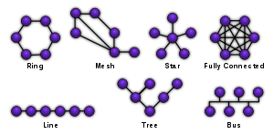
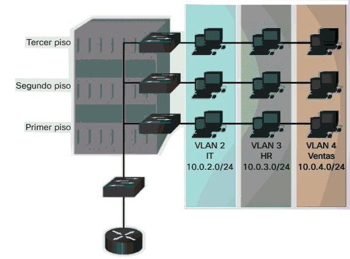
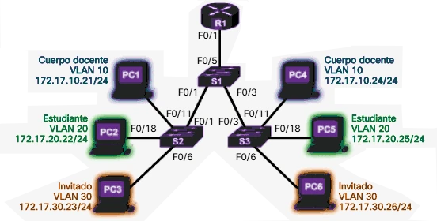
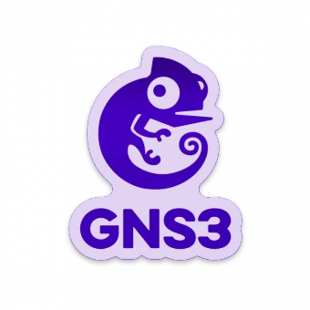

Proceso
crucial
para garantizar un rendimiento óptimo y una comunicación eficiente entre los dispositivos conectados.

TOPOLOGÍA de Red
Se refiere a la forma en que los dispositivos están interconectados.
Existen diferentes tipos de
topologías, como la topología en estrella, en bus, en anillo, en malla, entre otras. Cada topología
tiene sus propias ventajas y desventajas, y la elección dependerá de las necesidades específicas de
tu red.
REQUISITOS de la Red
Antes de diseñar una red, es fundamental identificar los requisitos y
objetivos de la misma. Esto incluye considerar el número de dispositivos que se conectarán, el ancho
de banda requerido, la seguridad necesaria y cualquier otro factor relevante.
Segmentación de Redes
Es el proceso
de dividir una red en segmentos más pequeños o subredes. Esto se hace por varias razones, como mejorar
el rendimiento, aumentar la seguridad y facilitar la administración de la red.

VLAN (Red de Área Local Virtual)
Es una red lógica que agrupa dispositivos en función de criterios
específicos, como la ubicación física, el departamento o la función. Las VLAN permiten separar el
tráfico de red y mejorar la seguridad y el rendimiento.

El enrutamiento es el proceso de enviar paquetes de datos entre diferentes redes
o subredes. Los routers son los dispositivos encargados de realizar esta función, asegurando que los
paquetes lleguen a su destino correcto
Tipos de VLANs
Actualmente existen varios tipos de VLANs que podemos utilizar en los diferentes
equipos, es decir, en los switches y puntos de acceso WiFi. Las diferentes VLANs que existen son las
basadas en el estándar 802.1Q VLAN Tagging basado en etiquetas, las VLAN basadas en puerto, las VLAN
basadas en MAC, las VLAN basadas en aplicaciones, aunque esta última no suele utilizarse
habitualmente.
802.1Q VLAN Tagging
Es el tipo de VLAN más utilizada, hace uso del estándar 802.1Q para etiquetar o
quitar la etiqueta a las VLANs. Este estándar consiste en introducir una cabecera 802.1Q dentro de
la trama Ethernet que todos conocemos, con el objetivo de diferenciar las VLANs que
tengamos configuradas. Este estándar no encapsula la trama original de Ethernet, sino que añade 4
bytes al encabezado Ethernet original, además, el cambio de «EtherType» se cambia al valor 0x8100
para señalar que se ha cambiado el formato de la trama.
Cuando estamos usando el estándar 802.1Q y creamos las diferentes VLANs en un
switch, podremos
configurar los diferentes puertos como «tagged» o «untagged», es decir, con etiqueta o sin etiqueta.
VLAN tagged: en las tramas
Ethernet se incorpora el «tag» del VLAN ID que hayamos configurado, este
tipo de VLANs son entendidas por todos los switches, por los puntos de acceso WiFi profesionales y
por los routers. Se pueden configurar en modo «tagged» una o más VLANs en un determinado puerto. En
los enlaces troncales (desde un router a un switch, de switch a switch y de switch a AP) se suelen
configurar siempre como «tagged» para «enviarles» todas las VLANs.
VLAN untagged: en las
tramas
Ethernet se retira el tag que hayamos configurado, este tipo de VLANs
son entendidas por todos los dispositivos, pero principalmente se utilizan de cara a los equipos
finales como ordenadores, portátiles, impresoras, cámaras IP y otro tipo de dispositivo. En un
puerto en concreto solamente podremos configurar una VLAN como «untagged», no podemos poner dos
VLANs como «untagged» porque el equipo final no «entendería» nada.

GNS3 es una herramienta popular utilizada para simular y emular redes.
Permite
crear topologías de red virtuales y probar configuraciones sin necesidad de hardware físico.
Emulación de Dispositivos: GNS3 permite emular una amplia gama
de dispositivos
de red, como routers, switches y firewalls. Esto te permite probar y configurar tu red virtual antes
de implementarla en un entorno real.
Interconexión de Dispositivos: Con GNS3, puedes conectar
dispositivos virtuales
y simular el tráfico de red entre ellos. Esto te permite probar la conectividad y el rendimiento de
tu red antes de implementarla.
Integración con Herramientas de Análisis: GNS3 se puede
integrar
con
herramientas de análisis de red, como Wireshark, para monitorear y analizar el tráfico de red en
tiempo real.